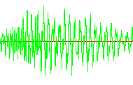

Hilfe


Parameter
| kanal |
Identität des Kanals (z.B. mit PlaySound ermittelt) ermittelt)
|
| frequenz | Sample-Frequenz sollte zwischen 8000 und 44100 liegen |
Rückgabewert
-
Beschreibung
Diese Anweisung setzt die Sample-Frequenz eines Sounds fest. So kann man dann beliebig die Tonhöhe ändern. Hat ein Sound eine Samplerate von 22050 und man setzt es auf 44100, so wird der Ton höher. Wird ein kleinerer Wert angegeben (z.B. 11025), so wird der Ton tiefer. ChannelPitch kann zur beliebigen Zeit eingesetzt werden und funktioniert besser als SoundPitch.
Zusatzinformationen
Ein Geräusch besteht nur aus Luftschwingungen. Diese Schwingungen können mit Computer gemessen und aufgenommen werden. Dies geschieht bei CD-Musik 44100 mal pro Sekunde. Würde man diese Musik nun mit anderer Samplerate abspielen, so ändert sich die Tonhöhe.

Beispiel
Dieses Beispiel spielt einen Sound mit einer bestimmten Samplerate ab:
ChannelID = PlaySound (SoundID)
ChannelPitch ChannelID, 22100
WaitKey
Siehe auch
PlaySound, ChannelPan, ChannelPlaying, SoundPan, ChannelVolume, PauseChannel, ResumeChannel, SoundPitch, SoundVolume